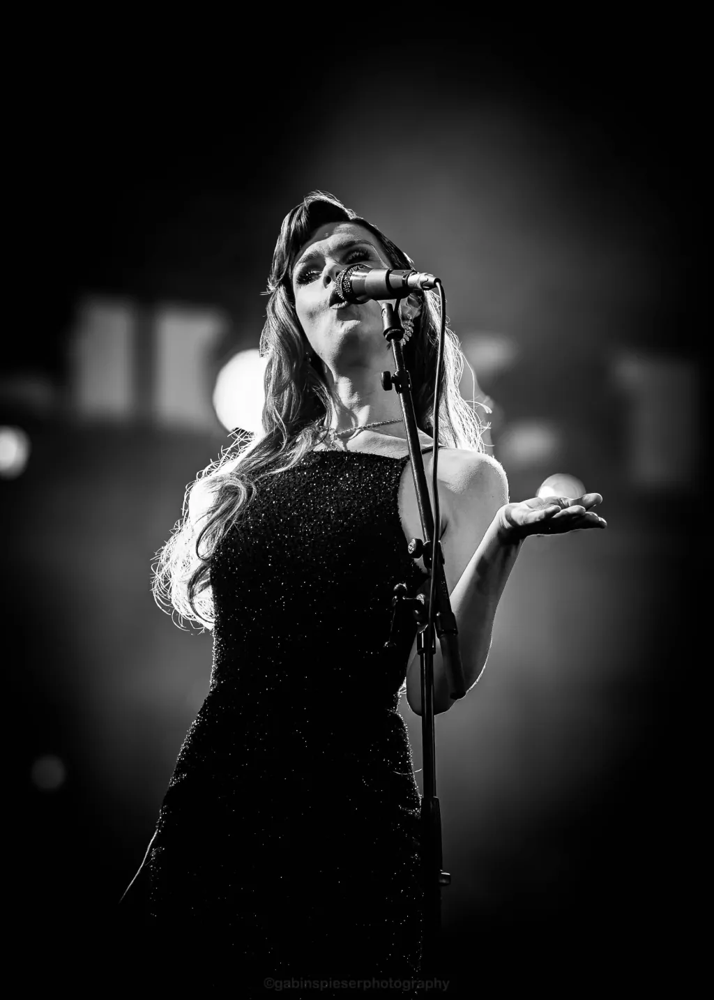
Pas une couleur. Une voix venue de Finlande, une robe qui accroche chaque éclat, deux ronds de lumière qui crèvent le noir. Le temps d’une soirée, tout se joue entre l’ombre de la scène et le blanc du papier. Des cheveux qui fouettent l’air, un rire qui part sans prévenir. Puis le noir reprend ses droits.
Noir
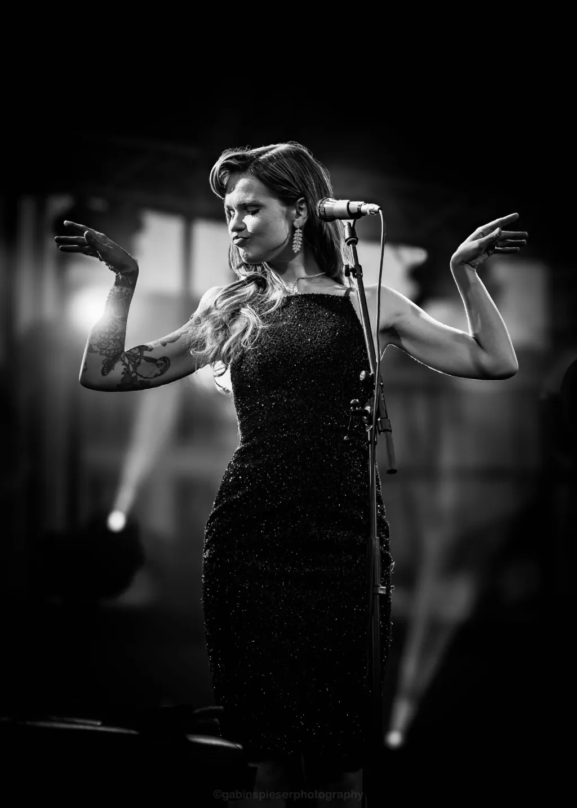
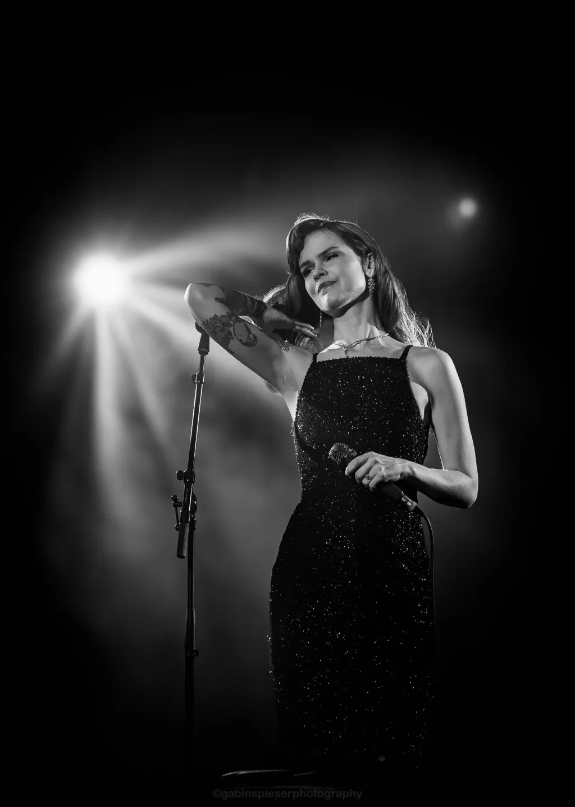
Une étoile de lumière dans le dos, une main sur la nuque. Autour, plus rien. Le noir a tout avalé.
Lumière


Au piano

Blanc

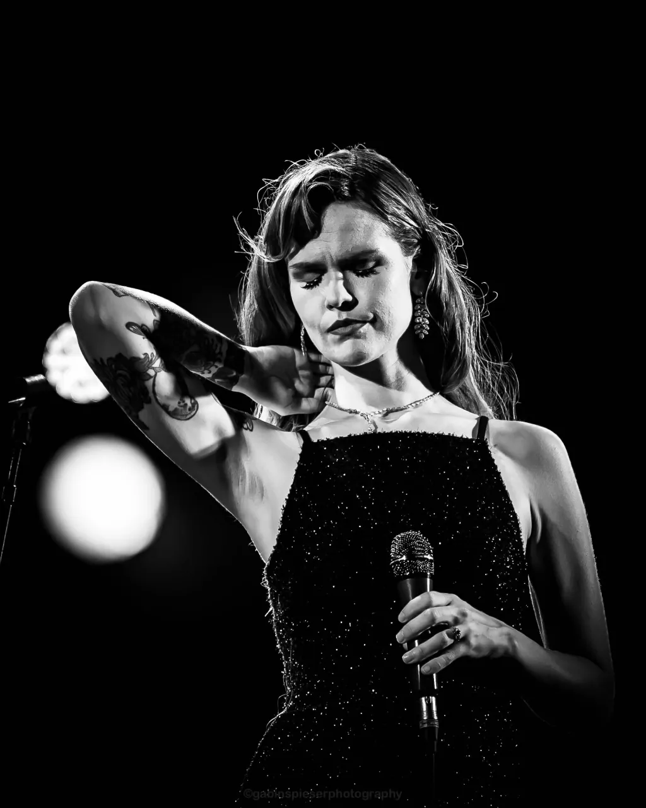

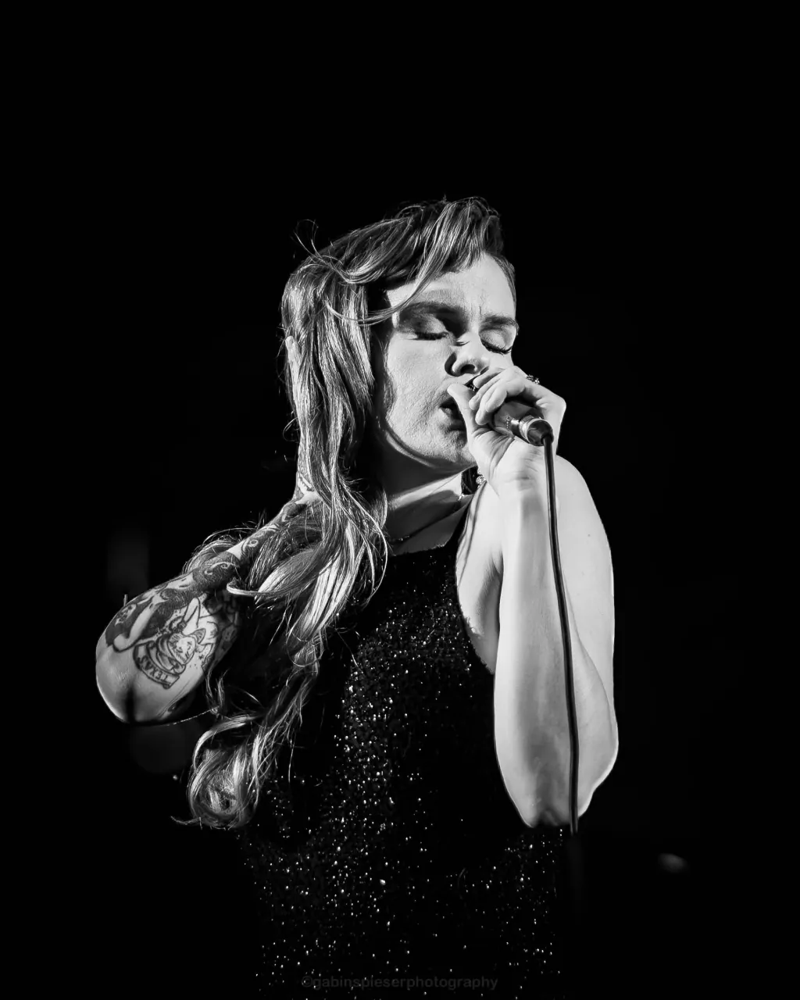

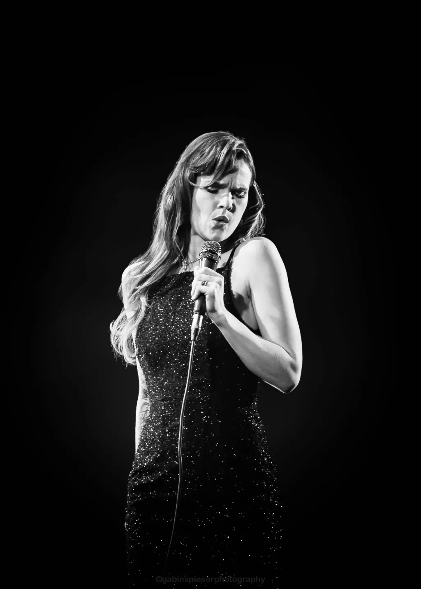

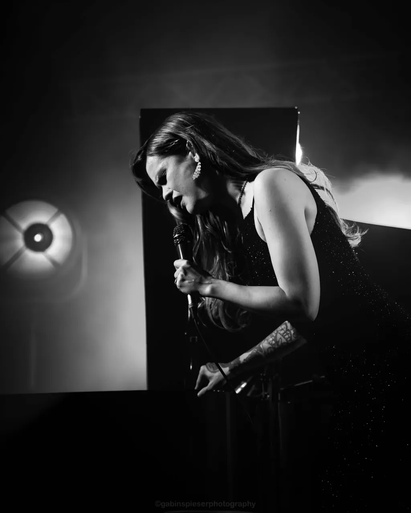
Mouvement

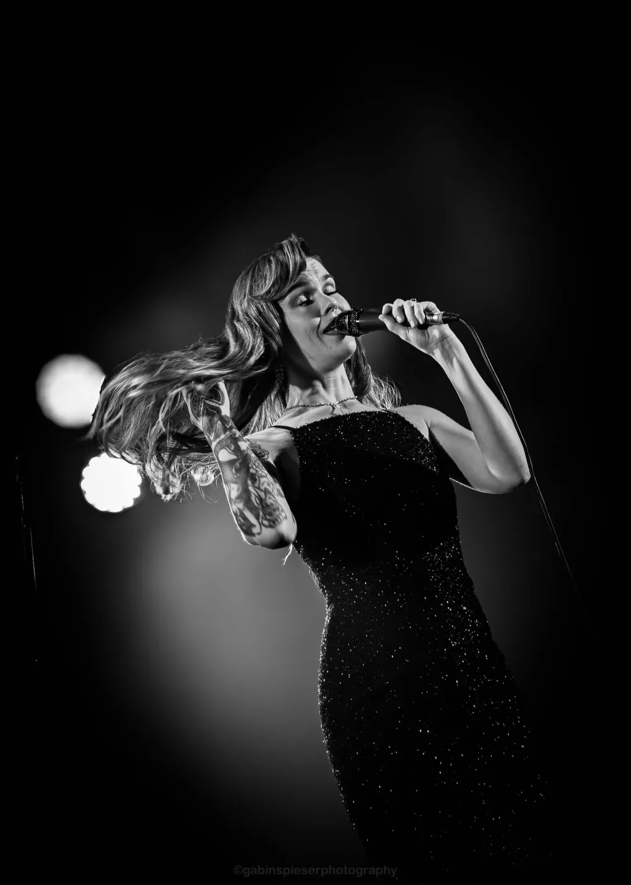

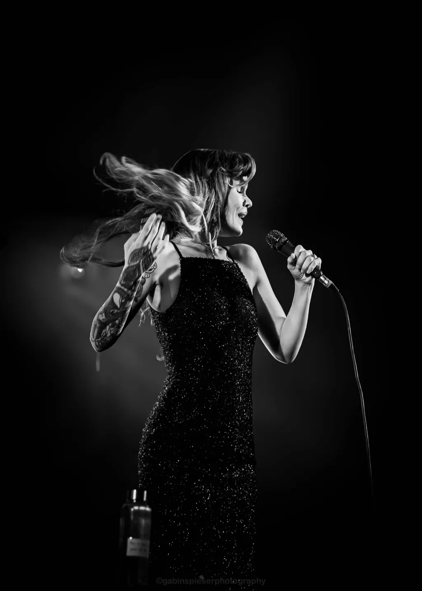

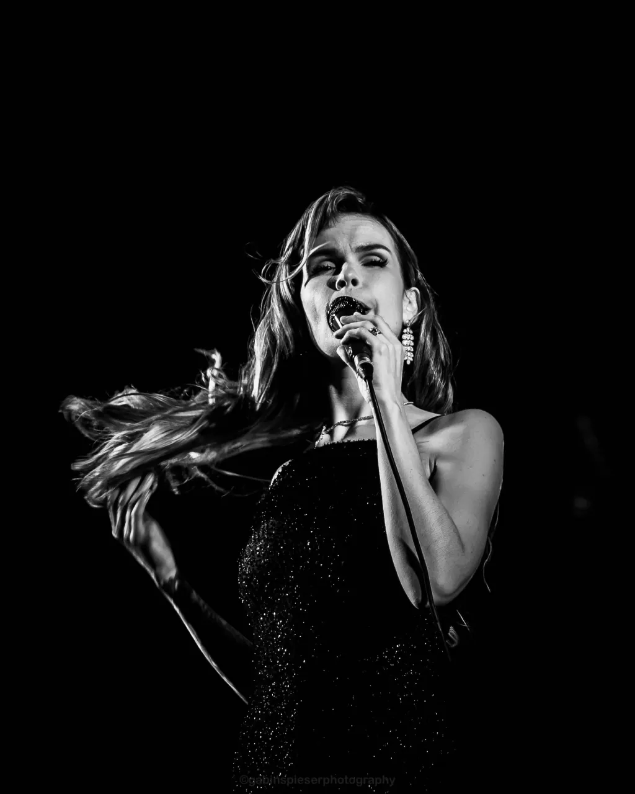

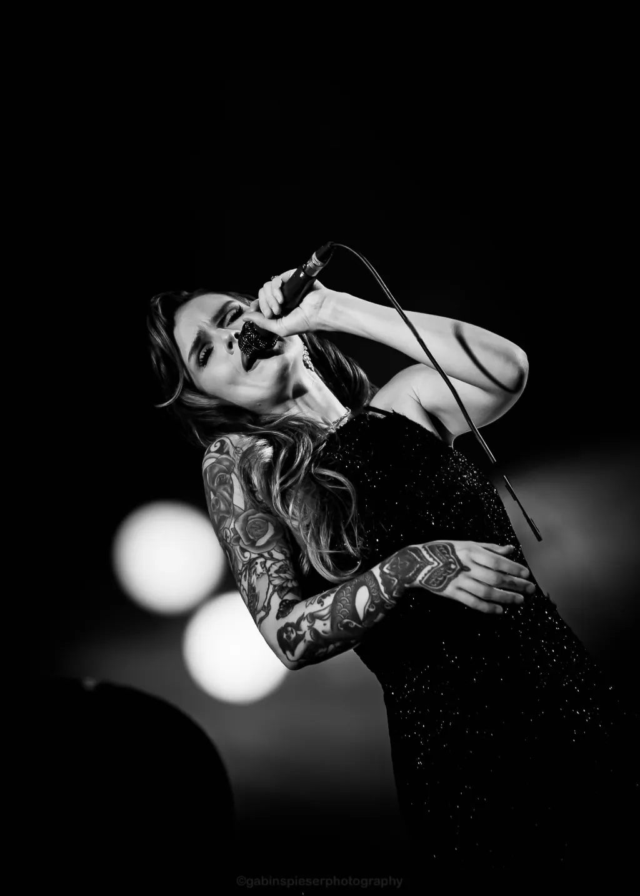
Contre-jour

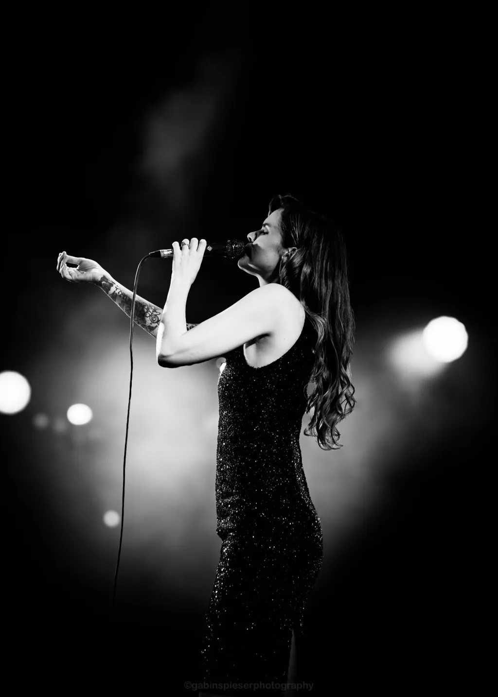

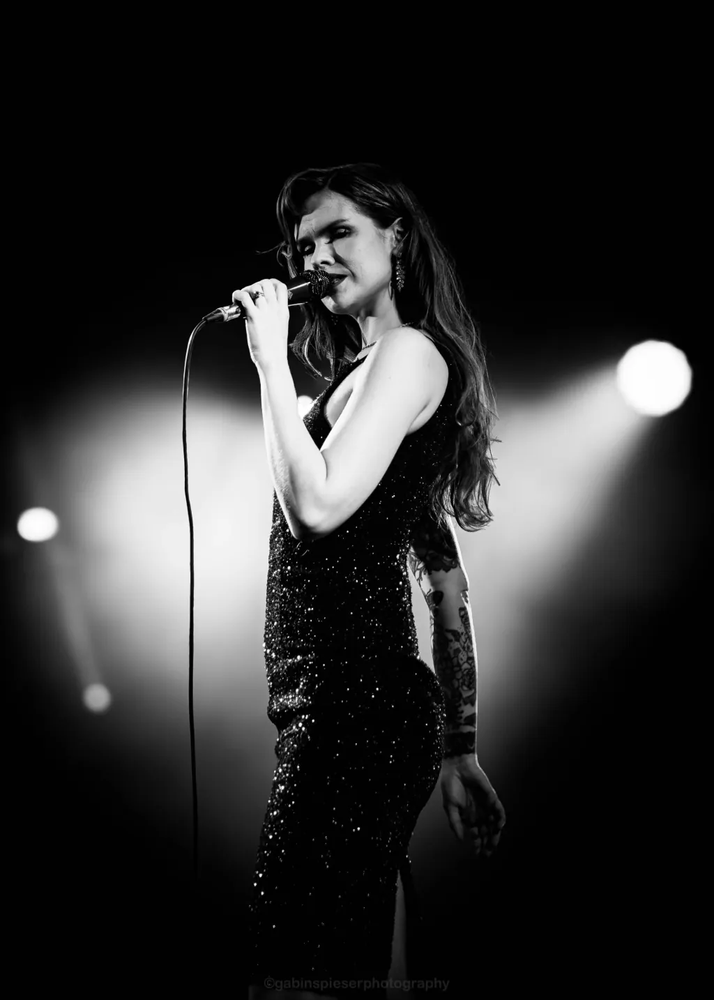
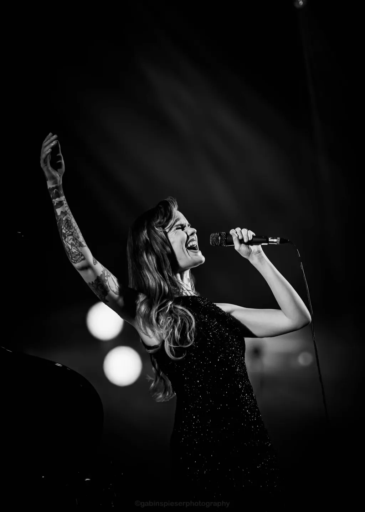
Le dernier geste

19 photographies d’Ina Forsman en noir et blanc par Gabin Spieser : une série de concert construite comme un récit, de l’entrée en scène au dernier geste.
Crédits
- Artiste
- Ina Forsman
- Série
- Noir, blanc, noir
- Photographies
- Gabin Spieser · 19 images
Publier une image ? Précisez la photographie et le support envisagés. Les droits d’utilisation et le crédit du photographe se définissent ensemble avant publication. Parlons de votre projet.